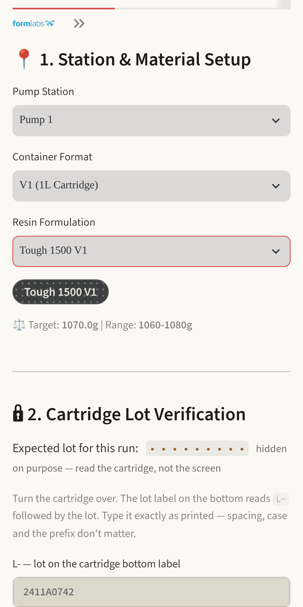
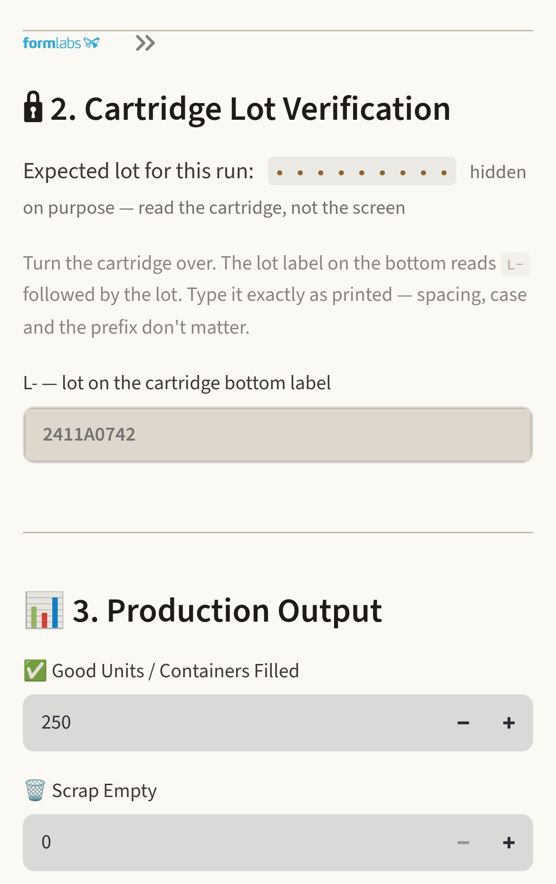
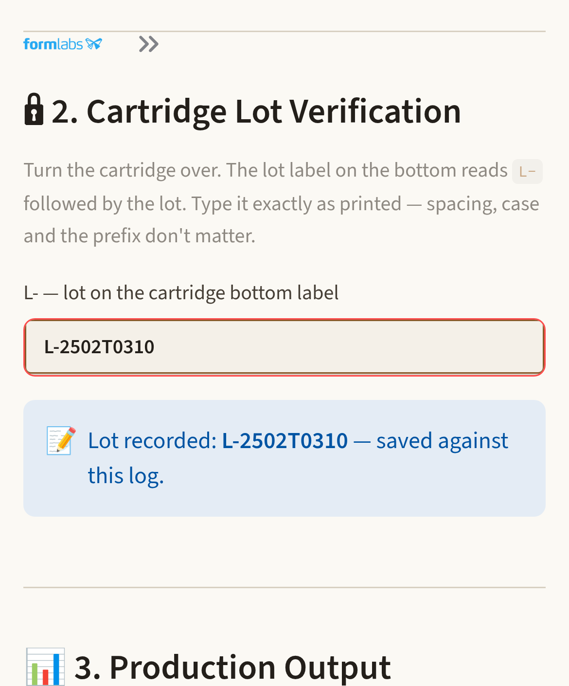
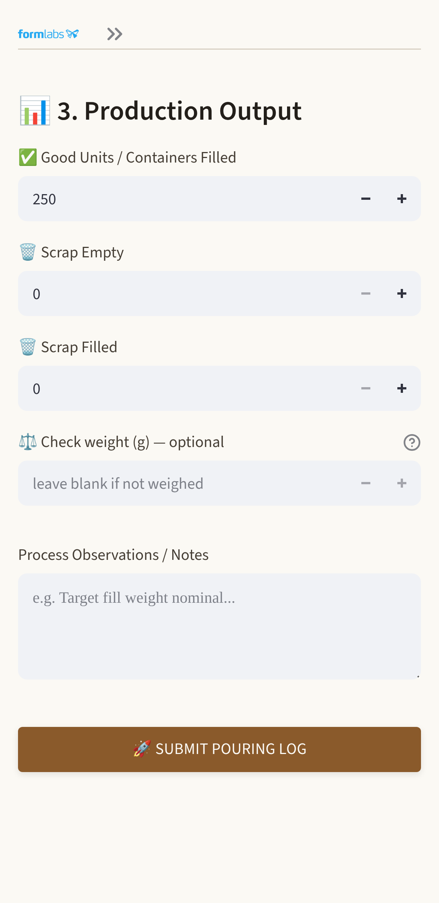
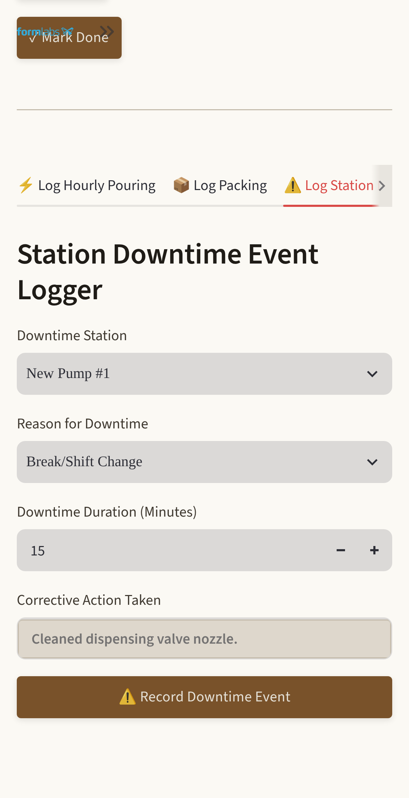

Logging your
pouring shift
Everything you need to use the pouring log on your phone — signing in, clearing your station, logging the hour, and what to do when something is not right.
For — pouring operators
Read once · keep for reference
September 2026
Before you start
What this is, in one page
Once an hour, at your pump, you write down what you poured. That is the whole job. It takes under a minute and it happens on your own phone — there is nothing to install and no extra device to carry.
Until now none of this was written down anywhere. That means nobody could answer simple questions later: how many we poured on a given day, how much was scrapped, how long a pump was down, or which resin lot went into which containers. What you log is where those answers come from.
The one ruleLog it when it happens. An hour written up at the end of a shift is a guess, and every number that comes out of this later is built on what you typed.
Your shift, start to finish
- Sign in on your phone. Once a day, or once ever if it is your own phone.
- Clear the startup checklist for your pump. The rest of the app stays locked until you do.
- Every hour: set your station and resin, check the lot, enter your counts, submit.
- Log downtime when the line stops, and photos at changeovers and spills.
- That is it. Nothing to close out at the end of the shift.
If you are not sureNothing here can break anything. The worst you can do is enter a wrong number, and there is a button to take that back. Ask your lead rather than guessing at a lot code.
Resin Pouring Production Logging · Operator Guide2
Step 1
Signing in
1
Open the plant address in your phone's browser
Your lead will give you the address. Add it to your home screen the first time and it becomes one tap after that — there is no app to download.
2
Enter your operator ID and PIN
Both come from your lead. If you have never signed in, ask them to set you up.
3
Tick Remember this device
On a phone only you carry, this is the right thing to do — it keeps you signed in for 30 days so you are not typing a PIN every hour. Do not tick it on a phone somebody else uses.
Five wrong PINs locks you out for fifteen minutesIt unlocks on its own, but you do not have to wait — any manager can reset your PIN straight away. Ask rather than guessing at it.
Everything you log is attached to your nameThat is the point of signing in: your hours are yours, and nobody can quietly change them. It also means you should not hand your phone to someone else to log their hour on your account.
Resin Pouring Production Logging · Operator Guide3
Step 2
Clearing your station
The first time you open the app each shift it is locked, and it stays locked until you have certified the pump you are standing at. This is deliberate: the checklist is about this station, not about you.
1
Pick the pump you are starting at
Choose it at the top of the lock screen. Whatever you pick here carries through to your logging screen, so you only answer this once.
2
Submit the start-of-shift cleanliness photo
Take it on the phone. Add a note if there is anything worth saying about the state of the station; otherwise the default note is fine.
3
Confirm the two checks
That you have scanned the daily station QR code and submitted that checksheet, and that your bins of empty cartridges and your receiving carts are staged for the run. If your plant has set one up, the button that opens the checksheet is right there on this screen, above the boxes — it opens in a new tab and this page waits for you.
4
Press Submit Validation & Unlock Terminal
The logging screens open up. You will not see this again today unless you move stations.
Moved to a different pump later?The checklist comes back for the new station. That is not a mistake — it certifies the pump you are standing at, and you are now standing at a different one.
Resin Pouring Production Logging · Operator Guide4
Step 3
Logging the hour — set up
1
Pump station
Already set from your checklist. Change it only if you have actually moved.
2
Container format
V2 or V1 cartridge, RPS bulk jug, or Pigment. Pick what you are physically filling. If your plant has it switched on there is also Drum / Tote, for the times you pour a measured amount into something rather than filling a count of containers — see below.
3
Resin formulation
The resin you are running. Its colour tag appears underneath so you can check it against the master sheet at a glance.
Under the resin you will see its target fill weight and the acceptable range. Worth a glance against your scale.
Pouring into a drum or a tote. Pick Drum / Tote as the format and the box asking for a count of containers becomes a box asking for the amount — in litres or in kilograms, whichever you measured. Say how many containers you filled with that amount, and what you poured into. The screen tells you what it works out to in litres before you submit; check that line, because it is the app’s sum, not yours. If the amount is more than the vessel could have given out it will not let you send it — check the number and the unit.

Station and material, with the target weight underneath.
If the screen never mentions a runThat is normal, and nothing is missing. Most plants use this as a log: you pick the station and material, read the lot, enter the counts, and that is the whole job. If yours does assign work to stations and you see a note saying no open run matches, keep going anyway — your log still records and still counts — and mention it to your lead afterwards.
Resin Pouring Production Logging · Operator Guide5
Step 4
Logging the hour — check the lot
This is the one part of the log that is a check rather than a record, and it is the reason the whole thing is worth doing.
1
Turn the container over
Cartridge or bulk jug — both carry the same lot label on the bottom.
2
Type the code you can see
Exactly as printed. Spacing, capitals and the L- prefix do not matter — type it however it comes out.

The lot check, before you type.
If a lot is expected, it is hidden on purposeWhere the screen has something to check yours against, you will see dots instead of a number. That is not a fault. If it showed you the answer, the check would be checking nothing — read the container, not the screen.
Resin Pouring Production Logging · Operator Guide6
Step 4
What the lot check tells you
Green — it matches
Carry on and enter your counts. Nothing else to do.
Next time, at the same station on the same resin and lot, it becomes a single tap to confirm the container still reads the same code. The full check returns on any change, after four hours, and every tenth log.

A clean check.
Red — STOP, do not pour
This container is not from the lot your run expects. Set it aside and get your lead.
If you pull it, press Wrong cartridge — pulled it, nothing poured. That records the catch: it is the system working.
If your lead decides it goes ahead anyway, choose a reason, add the detail, and photograph the label. The log saves with a flag on it for review.
Blue — recorded
If your plant does not assign work to stations there is nothing to compare yours against, so the screen reads your code back and saves it with the log. Nothing has gone wrong — read and type it exactly the same way.
A mismatch never stops you workingIt asks for an explanation, and it never blocks you from pulling the container — the safe thing to do is always the quickest thing to do.
Resin Pouring Production Logging · Operator Guide7
Step 5
Logging the hour — your counts
1
Good units filled
The containers you actually filled this hour.
2
Scrap empty and scrap filled, kept separate
They mean different things: an empty scrapped is a handling problem, a filled one is lost resin as well. Keeping them apart is what makes the difference visible.
3
Check weight — optional, every time
If you have the scale to hand, weigh one and type the number. It tells you straight away whether that container is inside its window and how far off target it is. Leaving it blank never blocks anything — a blank is honest, a guess is worse than nothing.
4
Anything worth noting, then submit
A green line appears at the top of the screen naming what was recorded, and it stays there until you do something else — so you can look at the pump and back and still see it. If it says the entry did not save, nothing was recorded: submit again.

Counts and submit.
Typed the wrong number? Take it back.For two minutes after you submit, an Undo last button sits just above the counts. Use it — a 2500 that should have been 250 is much easier to fix now than to explain later.
Resin Pouring Production Logging · Operator Guide8
Step 6
Downtime, photos and messages
When the line stops
Use the Downtime tab: the reason, how many minutes, and what was done about it.
Log it as it happens rather than reconstructing it later. Downtime nobody records does not disappear — it turns up as bad yield instead, which makes it look like the pouring was the problem.

The downtime tab.
Photo audits
The Audit tab covers start of shift, end of shift, moving a line onto a different resin, and spills. There is a tick box to mark a photo as an active spill or leak, which flags it for attention rather than filing it as routine.
Leaving a note for your lead
The Note to Management tab keeps a written note against your name and the time, where it stays on the record instead of living in a text message. It is read when a lead next opens it — nobody is watching it in real time, so use the radio or find somebody in person for anything urgent or unsafe. It is for the things that would otherwise be forgotten by the end of shift: running low on a material, a machine that needs looking at, something that keeps costing time.
Your own numbers
Units poured, scrap and quality yield sit at the top of your screen and update as you log. It is the same figure management sees — there is no separate scoring going on behind it.
Resin Pouring Production Logging · Operator Guide9
Reference
When something is not right
The app is locked and will not let me log
You have not cleared the startup checklist for the pump you picked. Do that and the logging tabs open. If you have moved stations, it will ask again for the new one.
I am locked out after mistyping my PIN
Five wrong attempts locks the account for fifteen minutes. It clears on its own, but any manager can reset it immediately — that is faster than waiting.
The lot does not match and my lead is not around
Do not pour. Set the container aside and press Wrong cartridge — pulled it, nothing poured. That is a complete, correct outcome on its own; nothing is left hanging by choosing it.
It says no open run matches my station
Log the hour anyway — it records and it counts. Read the code off the container as normal; it is stored against your log either way. If your plant assigns work to stations, tell your lead afterwards so it can be set up. If it does not, this is simply how the screen looks and there is nothing to report.
I typed the wrong number and already submitted
Press Undo last within two minutes. After that, ask your lead — they can correct it from their side, and it is better fixed than left.
The screen says my log was not saved
Then it was not, and nothing was recorded. Submit again. This is the app being honest rather than pretending — the network drops in parts of the building.
I cannot read the screen properly
Under Account & Preferences there is a Display section: Glove mode makes every button and box bigger for gloved hands, and there are light themes for working under bright shop lighting. Both are remembered.
I keep losing my place while pouring
If there is a Focus mode toggle at the top of the logging tab, turn it on: it strips the screen down to the four things you need mid-run — resin, lot, count so far, how many left — big enough to read from across the station. It only appears in plants that assign work to stations, because those four numbers come off the assignment.
Resin Pouring Production Logging · Operator Guide10
Last page
What else it does
None of this is your job, and none of it needs anything from you beyond the hourly log. It is here so you know what happens to what you type, and who is looking at it.
Work ordersOptional, and off unless a plant turns it on. When it is on, a manager dispatches runs to a pump; that is where an expected lot comes from, and how your units count towards a target.
Who runs itIn most plants, your manager — accounts, PIN resets, pumps and settings are all theirs. There is no separate IT person to wait for.
The floor displayA screen showing the shift’s pace, built from the same logs. No extra entry — it is your hourly figures, shown large.
Trends and reportsYield, scrap and downtime over weeks, and exports for anyone who needs the numbers elsewhere. All of it is the same rows you entered.
Fill weightsThe optional check weights add up into how much resin is going out above target — which is money, and invisible without them.
Lot traceabilityWhich lot went into which containers, at which pump, by whom and when. That is the question a customer complaint asks.
Reactors and stockHow much is left in each supply vessel, worked out from what has actually been poured out of it. The lot you read off the container is what tells it a vessel has been refilled — one more reason that field is worth getting right.
If something about the app is wrong or annoying, say soThere is a feedback box under Account & Preferences, and it goes straight to whoever maintains this. Small annoyances at a pump are the ones worth reporting — they are the ones nobody else can see.
A fuller description of the system, for whoever runs it, is in the Resin Pouring — Production Logging Operations Handbook.
Resin Pouring Production Logging · Operator Guide11